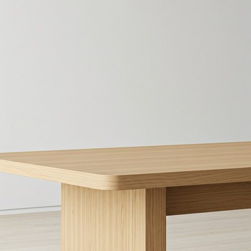
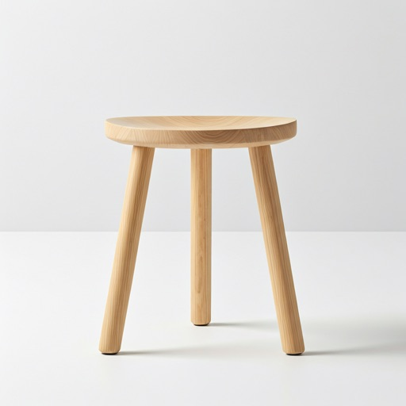
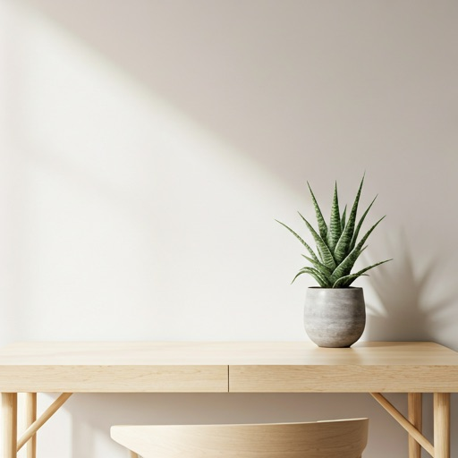

Collection 2024
Quietude in
Quietude in
Craftsmanship.
Functional objects designed for the intentional home. Sourced from sustainable ash forests and hand-finished in our Copenhagen studio.
Functional objects designed for the intentional home. Sourced from sustainable ash forests and hand-finished in our Copenhagen studio.
We believe the things you own should last a lifetime. Our philosophy centers on modularity, repairability, and aesthetic permanence.
Certified FSC timber from northern latitudes.
Traditional dovetails meeting modern CNC precision.

The "Birchwood" series explores the intersection of raw nature and human intent. Each surface is hand-sanded to 400-grit for a silk-like touch that invites the hand as much as the eye.
Available for worldwide delivery.

Seating / Ash

Workspace / Birch

Comfort / Oak
Design Manifesto
"Simplicity is the ultimate sophistication. We do not design for the eye, but for the soul's need for peace."